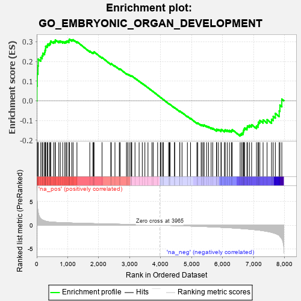
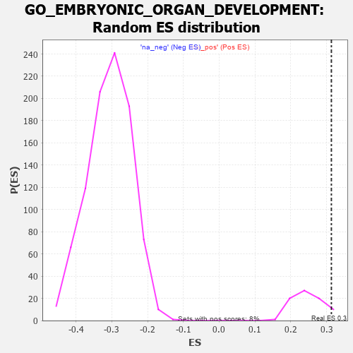

| | | Dataset | 7d |
| Phenotype | NoPhenotypeAvailable |
| Upregulated in class | na_pos |
| GeneSet | GO_EMBRYONIC_ORGAN_DEVELOPMENT |
| Enrichment Score (ES) | 0.3131453 |
| Normalized Enrichment Score (NES) | 1.2822517 |
| Nominal p-value | 0.051282052 |
| FDR q-value | 0.42094868 |
| FWER p-Value | 1.0 |
Table: GSEA Results Summary

Fig 1: Enrichment plot: GO_EMBRYONIC_ORGAN_DEVELOPMENT
Profile of the Running ES Score & Positions of GeneSet Members on the Rank Ordered List
| PROBE | GENE SYMBOL | GENE_TITLE | RANK IN GENE LIST | RANK METRIC SCORE | RUNNING ES | CORE ENRICHMENT | | 1 | ST14 | | | 7 | 5.713 | 0.0754 | Yes |
| 2 | HMX3 | | | 17 | 4.775 | 0.1380 | Yes |
| 3 | SIX2 | | | 40 | 3.152 | 0.1773 | Yes |
| 4 | TGFB3 | | | 49 | 2.654 | 0.2117 | Yes |
| 5 | SP3 | | | 131 | 1.391 | 0.2199 | Yes |
| 6 | FOXF1 | | | 176 | 1.136 | 0.2295 | Yes |
| 7 | WNT16 | | | 198 | 1.072 | 0.2412 | Yes |
| 8 | LBX1 | | | 254 | 0.929 | 0.2466 | Yes |
| 9 | TBX20 | | | 267 | 0.880 | 0.2568 | Yes |
| 10 | TEAD4 | | | 286 | 0.846 | 0.2658 | Yes |
| 11 | SHOX2 | | | 288 | 0.842 | 0.2769 | Yes |
| 12 | DLL1 | | | 337 | 0.760 | 0.2809 | Yes |
| 13 | ARNT | | | 357 | 0.741 | 0.2884 | Yes |
| 14 | ALX4 | | | 413 | 0.686 | 0.2906 | Yes |
| 15 | SUFU | | | 443 | 0.665 | 0.2958 | Yes |
| 16 | ERCC1 | | | 453 | 0.660 | 0.3034 | Yes |
| 17 | SRF | | | 542 | 0.615 | 0.3004 | Yes |
| 18 | ALX1 | | | 590 | 0.598 | 0.3024 | Yes |
| 19 | FBXW8 | | | 601 | 0.594 | 0.3091 | Yes |
| 20 | VASH1 | | | 712 | 0.556 | 0.3025 | Yes |
| 21 | ZIC3 | | | 760 | 0.542 | 0.3038 | Yes |
| 22 | TFEB | | | 839 | 0.522 | 0.3008 | Yes |
| 23 | STOX1 | | | 905 | 0.506 | 0.2993 | Yes |
| 24 | LRIG1 | | | 946 | 0.497 | 0.3008 | Yes |
| 25 | WDR48 | | | 975 | 0.489 | 0.3038 | Yes |
| 26 | AKT1 | | | 1040 | 0.476 | 0.3020 | Yes |
| 27 | YAP1 | | | 1041 | 0.475 | 0.3084 | Yes |
| 28 | MEF2C | | | 1054 | 0.473 | 0.3131 | Yes |
| 29 | KMT2A | | | 1130 | 0.458 | 0.3097 | No |
| 30 | ERCC3 | | | 1173 | 0.451 | 0.3104 | No |
| 31 | TEAD1 | | | 1298 | 0.428 | 0.3003 | No |
| 32 | ERCC2 | | | 1712 | 0.354 | 0.2525 | No |
| 33 | ABR | | | 1812 | 0.335 | 0.2444 | No |
| 34 | GATA4 | | | 1837 | 0.330 | 0.2458 | No |
| 35 | TCF7 | | | 1848 | 0.328 | 0.2489 | No |
| 36 | BMP7 | | | 2107 | 0.290 | 0.2199 | No |
| 37 | HIPK2 | | | 2389 | 0.247 | 0.1875 | No |
| 38 | PBX4 | | | 2406 | 0.245 | 0.1887 | No |
| 39 | MBD3 | | | 2524 | 0.223 | 0.1768 | No |
| 40 | ARID2 | | | 2664 | 0.204 | 0.1618 | No |
| 41 | KDM6A | | | 2690 | 0.200 | 0.1613 | No |
| 42 | FGFR2 | | | 2895 | 0.167 | 0.1376 | No |
| 43 | ACVR1 | | | 2932 | 0.161 | 0.1352 | No |
| 44 | PCSK5 | | | 2983 | 0.152 | 0.1308 | No |
| 45 | LEF1 | | | 3037 | 0.144 | 0.1260 | No |
| 46 | BIRC6 | | | 3047 | 0.143 | 0.1268 | No |
| 47 | RBBP6 | | | 3066 | 0.141 | 0.1264 | No |
| 48 | PAX6 | | | 3170 | 0.127 | 0.1150 | No |
| 49 | SMAD3 | | | 3303 | 0.105 | 0.0996 | No |
| 50 | MED1 | | | 3405 | 0.089 | 0.0879 | No |
| 51 | GLI1 | | | 3489 | 0.079 | 0.0784 | No |
| 52 | MAPK3 | | | 3589 | 0.062 | 0.0666 | No |
| 53 | HSF1 | | | 3718 | 0.039 | 0.0509 | No |
| 54 | VPS52 | | | 3758 | 0.033 | 0.0463 | No |
| 55 | NIPBL | | | 3900 | 0.010 | 0.0285 | No |
| 56 | EYA1 | | | 3987 | -0.006 | 0.0177 | No |
| 57 | SYF2 | | | 4008 | -0.009 | 0.0152 | No |
| 58 | TAL1 | | | 4064 | -0.018 | 0.0085 | No |
| 59 | WNT2 | | | 4084 | -0.021 | 0.0064 | No |
| 60 | PAX5 | | | 4255 | -0.051 | -0.0146 | No |
| 61 | WNT11 | | | 4282 | -0.056 | -0.0172 | No |
| 62 | TBX2 | | | 4303 | -0.060 | -0.0189 | No |
| 63 | SETD2 | | | 4443 | -0.084 | -0.0355 | No |
| 64 | KCNQ4 | | | 4452 | -0.085 | -0.0353 | No |
| 65 | GATA3 | | | 4614 | -0.120 | -0.0542 | No |
| 66 | ATOH1 | | | 4615 | -0.121 | -0.0526 | No |
| 67 | PTK7 | | | 4687 | -0.136 | -0.0598 | No |
| 68 | DLG1 | | | 4860 | -0.169 | -0.0794 | No |
| 69 | TRA2B | | | 4962 | -0.191 | -0.0897 | No |
| 70 | TBX1 | | | 5166 | -0.241 | -0.1124 | No |
| 71 | SMO | | | 5195 | -0.247 | -0.1126 | No |
| 72 | EPN1 | | | 5304 | -0.272 | -0.1227 | No |
| 73 | TCF21 | | | 5340 | -0.283 | -0.1234 | No |
| 74 | FZD5 | | | 5386 | -0.292 | -0.1252 | No |
| 75 | PLK4 | | | 5397 | -0.295 | -0.1226 | No |
| 76 | STIL | | | 5483 | -0.314 | -0.1292 | No |
| 77 | FGFR1 | | | 5543 | -0.332 | -0.1323 | No |
| 78 | ROR2 | | | 5626 | -0.353 | -0.1380 | No |
| 79 | CASP8 | | | 5678 | -0.369 | -0.1396 | No |
| 80 | ADA | | | 5798 | -0.405 | -0.1493 | No |
| 81 | BBS4 | | | 5806 | -0.407 | -0.1447 | No |
| 82 | BBS5 | | | 5862 | -0.421 | -0.1461 | No |
| 83 | PCGF2 | | | 5943 | -0.451 | -0.1503 | No |
| 84 | PRDM1 | | | 5956 | -0.457 | -0.1457 | No |
| 85 | LRIG3 | | | 6055 | -0.492 | -0.1516 | No |
| 86 | FBN1 | | | 6080 | -0.499 | -0.1480 | No |
| 87 | STK4 | | | 6145 | -0.518 | -0.1492 | No |
| 88 | SMAD2 | | | 6216 | -0.541 | -0.1509 | No |
| 89 | IFT52 | | | 6280 | -0.566 | -0.1514 | No |
| 90 | IFT57 | | | 6307 | -0.579 | -0.1469 | No |
| 91 | OTOP1 | | | 6562 | -0.690 | -0.1701 | No |
| 92 | MKS1 | | | 6607 | -0.715 | -0.1661 | No |
| 93 | USH1G | | | 6654 | -0.740 | -0.1621 | No |
| 94 | TMED2 | | | 6665 | -0.746 | -0.1534 | No |
| 95 | VASH2 | | | 6680 | -0.752 | -0.1451 | No |
| 96 | EGFR | | | 6708 | -0.765 | -0.1384 | No |
| 97 | C2CD3 | | | 6783 | -0.802 | -0.1371 | No |
| 98 | WDR19 | | | 6796 | -0.812 | -0.1277 | No |
| 99 | AHI1 | | | 6860 | -0.848 | -0.1244 | No |
| 100 | MIB1 | | | 6932 | -0.890 | -0.1216 | No |
| 101 | BBS7 | | | 7089 | -0.988 | -0.1283 | No |
| 102 | WHRN | | | 7139 | -1.025 | -0.1208 | No |
| 103 | WDR60 | | | 7153 | -1.038 | -0.1086 | No |
| 104 | OVOL2 | | | 7197 | -1.068 | -0.0998 | No |
| 105 | MYO7A | | | 7302 | -1.175 | -0.0974 | No |
| 106 | LHX1 | | | 7431 | -1.305 | -0.0962 | No |
| 107 | TTPA | | | 7575 | -1.516 | -0.0942 | No |
| 108 | PKD1 | | | 7628 | -1.611 | -0.0793 | No |
| 109 | MYO6 | | | 7697 | -1.753 | -0.0646 | No |
| 110 | PKD2 | | | 7822 | -2.167 | -0.0514 | No |
| 111 | DLX5 | | | 7845 | -2.378 | -0.0224 | No |
| 112 | FBN2 | | | 7906 | -2.873 | 0.0083 | No |
Table: GSEA details [plain text format]

Fig 2: GO_EMBRYONIC_ORGAN_DEVELOPMENT: Random ES distribution
Gene set null distribution of ES for GO_EMBRYONIC_ORGAN_DEVELOPMENT